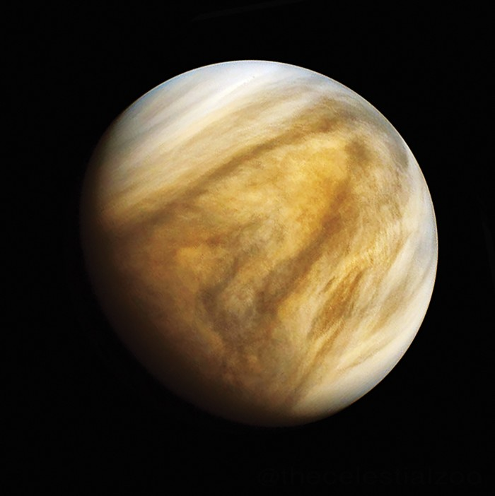

Home |
Weird Animal Facts |
Space Oddities |
Historical Suprises |
Tableau Visualizations |
Back To Main Page
Space Oddities
One day on Venus is longer than its year
Venus rotates so slowly that it takes about 243 Earth days to complete one spin. But it only takes 225 Earth days to orbit the Sun—so its day is actually longer than its year!
Neutron stars can spin 600 times per second
These ultra-dense remnants of supernova explosions rotate incredibly fast, with some spinning hundreds of times per second due to their immense gravitational pull and conservation of angular momentum.
